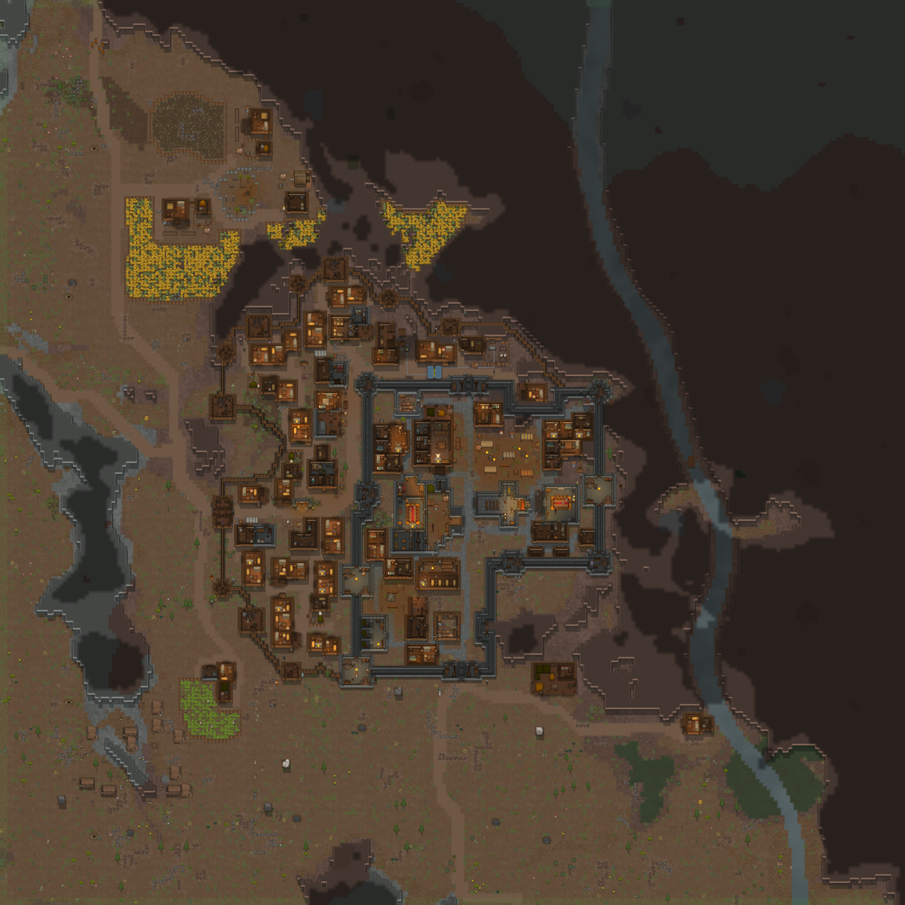

Custom Base Framework
Custom Base Framework (CBF) builds NPC settlements from reusable buildings designed in RimWorld. A settlement plan specifies the houses, workshops, fortifications and inhabitants; the generator arranges them around the terrain of each map, with connecting roads, fields and animal pens.
The in-game editor lets you create this content without writing C#: build a structure on a test map, save it as a piece, and add its category to a settlement plan. Modders can also write or extend the same definitions in XML.

Terms
These words appear throughout the guide.
- Piece: one building or one stretch of wall, drawn on the map and saved as a template. See Pieces.
- Category: a group of pieces, for example small houses or markets. Settlements ask for categories, and the generator picks a piece from them. See Categories.
- Settlement type (also called plan): the description of one kind of place, for example a market town or a fortress city. See Settlements.
- Ward: one ring of a settlement. There are up to three: the town in the middle, the suburb around it and the countryside outside. Each ward has its own buildings, its own garrison and optionally a wall.
- District: a group of buildings inside a ward that is placed together, for example a market quarter.
- Anchor: a marked cell in a piece where CBF places something when the piece is built: furniture, containers with loot, or pawns.
- Object list, loot table, material list: what an anchor may place, what goes into the containers, and which walls, floors and doors a settlement uses. See Loot and Material lists.
- Annex: a side part docked onto a house, such as a shed. See Annexes.
- Pawn list: a weighted list of pawn kinds for garrisons and inhabitants. See Pawns.
Making buildings vary
A house can keep its floor plan while changing its furniture, residents and outbuildings. Choose the parts that should vary:
- Interior. Anchors can select beds, storage and decoration from object lists. Their chances let some rooms remain partly empty, while loot tables vary the supplies.
- Annexes. A house can gain a shed, stable or yard where there is room. These additions change its outline as well as its contents. See Annexes.
- Placement. Rotation, mirroring, the neighbouring buildings, the roads and the place in the town differ each time.
A fixed design is useful too, especially for landmarks. CBF only varies the parts you configure for it.
What you need
- RimWorld 1.6 and Harmony.
- Custom Base Framework.
- The mods your pieces use. Pieces that name things from a missing mod are skipped, not built with holes.
CBF brings its own buildings for Medieval Overhaul and Vanilla Factions Expanded - Medieval 2, and a vanilla style for modern towns. For some mods there are extra pieces designed for their things: cemeteries with Dark Ages: Crypts and Tombs, outposts for World Domination 2.0 and holdings for A Rim of Ice and Fire. Cemeteries and outposts come for Medieval Overhaul and for VFE Medieval 2, the holdings for Medieval Overhaul. See Compatibility.
Adding and removing
- Adding to a running game: CBF can be added to a running game. Faction bases you have not visited yet are built by CBF when you first visit them. Bases you already visited stay as they are.
- Removing: first use Remove CBF data from this save in the mod settings, then save, quit and remove the mod. See Mod settings.
Editor guide
For players who want to make or change buildings and settlements. The pages follow the tabs of the editor.
- Getting started: switch the editor on, create a mod of your own, find your way around the window.
- Piece: draw and edit pieces, set anchors, and add annexes that dock onto houses.
- Settlement: settlement types with wards, walls, districts, fields and pens, and which factions get them.
- Categories: group pieces and give them rules.
- Loot: object lists, loot tables, containers and crop lists, and material lists for walls, doors, gates and roads.
- Pawn: pawn kinds and pawn lists for garrisons and inhabitants.
- Unit swap: let each faction send its own units.
What you can change lists every setting, the values with a fixed meaning and the names you should not rename.
Playing
- Shipped settlements: example towns, strength and performance.
- Quests: the quests that come with Medieval Overhaul.
- Mod settings: settlements per faction, error reports, removing CBF from a save.
- Compatibility: content for other mods, World Domination, Multiplayer and more.
Modding
For modders who write XML by hand or want to know what the editor writes.
- Your own content mod: folder layout, how the defs connect, wall profiles, styles, ruins.
- Changing content with patches: complete examples for existing plans, pieces and lists.
- Settlement types in XML
- Pieces and categories in XML
- Loot in XML
- Pawns in XML
- Quests in XML
- Dungeon levels (development)
- Field reference: every field of every def.